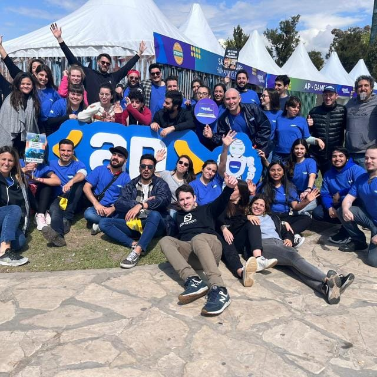
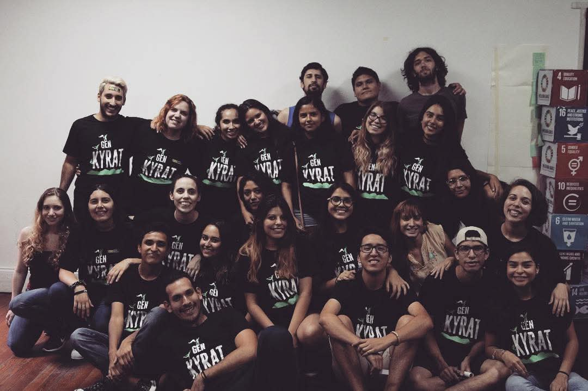

About Me
I was born in Viedma (Patagonia)


Programming Instructor and Educational Tutor
Talento Tech / Aprendé Programando – Government of the City of Buenos Aires
April 2022 – Present
- Planned and delivered programming classes to youth aged 15–18 (100 students per course)
- Implemented agile methodologies
- Coordinated "Digital Women", an initiative for female inclusion in IT

Shift Manager
River Plate Vaccination Center – Government of the City of Buenos Aires
December 2021 – March 2022
- Team leadership of 30 members, providing training and managing performance
- Optimization of logistical processes within the vaccination center
- Administrative coordination: citizen assistance, document control, and conflict resolution

Volunteer Work
- AIESEC: Coordinated incoming international projects and managed volunteer teams
- Creando Futuro Foundation: Planned and taught literary workshops and academic support for youth